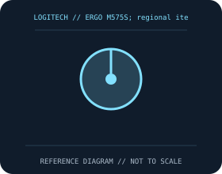

[ MICE AND TRACKBALLS // IDENTIFIED COMPONENT ]
Logitech ERGO M575S Wireless Trackball
Right-hand thumb-operated trackball with a fixed optical sensor, silent-click design, and Bluetooth or Logi Bolt connectivity.

MODEL IDENTIFICATION: ERGO M575S; regional item numbers vary (including 910-006198).. Confirm printed identifiers, revision, region, and included accessories before repair or compatibility claims.
Model specifications
| Catalog leaf | Mice and trackballs |
|---|---|
| Exact model / identifier | ERGO M575S; regional item numbers vary (including 910-006198). |
| Sensor and switches | Optical trackball sensor; pointer speed adjustable from 400 to 2,000 DPI with Logi Options+. Five controls including the scroll-wheel click; switch mechanism details are not specified in the published model sheet. |
| Wired/wireless interface; polling and DPI | Bluetooth Low Energy or included Logi Bolt USB receiver; wireless only. Standard pointer functions use HID, while button remapping and pointer settings require Logi Options+ on supported systems. |
| Dimensions and weight | 134 × 100 × 48 mm; 145 g with AA battery. |
| Host and driver compatibility | Bluetooth support includes Windows, macOS, iPadOS, Android, ChromeOS, and Linux subject to OS version; receiver compatibility differs by platform. Advanced customization is limited to supported Windows/macOS releases. |
| Power and battery | One user-replaceable AA cell; up to 18 months claimed under Logitech test conditions. Battery life depends on connection, usage, and cell. |
| Revision and SKU caveats | M575S is the silent-click refresh of ERGO M575, not a revision-identical unit. Logitech part numbers vary by color, region, and bundle; verify the base label and bundled receiver. DPI adjustment/software support are OS dependent. |
Preservation and service
Keep the receiver, cable, battery cover, and included accessories with the identified mouse. Clean optical apertures and trackball contacts without introducing liquid; record host OS, driver/firmware version, connection mode, and battery condition during tests.
Published maximum DPI, polling, click-life, and runtime values are manufacturer figures under specific test conditions, not a guarantee of individual-unit performance.
Manufacturer sources
- Logitech ERGO M575S product pageManufacturer product or support documentation; confirm the exact SKU, region, and revision against the device label.
- ERGO M575S technical specificationManufacturer product or support documentation; confirm the exact SKU, region, and revision against the device label.
Manufacturer documentation changes over time; retain the applicable manual and revision with the physical equipment record.